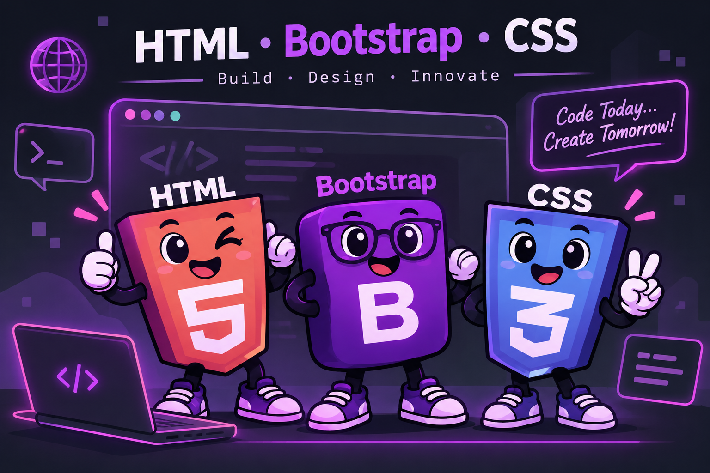

HTML5 (Core)
~35% of the codebase. Provides the semantic backbone (<header>, <nav>, <main>, <footer>) and native multimedia tags used in every page.
Bootstrap 5.3
~60% of the styling. Powers the entire responsive grid (container, row, col-*), dark theme utilities, typography, spacing, and circular shapes (rounded-circle).
Custom CSS
~5% (Minimalist). Kept strictly to the bare minimum—only used for our signature purple accent (#c06cf5), dark card backgrounds (#2b303b), and circle dimensions.
